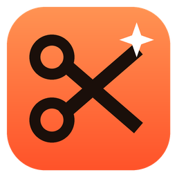

CutwiseLooking for Cutwise...
Cutwise is the easy AI video editor. It runs on the big AI PC (the AMD 395) and uses its CPU cores for the AI and its Radeon GPU for exports.
This page keeps checking and jumps to Cutwise as soon as it's running.